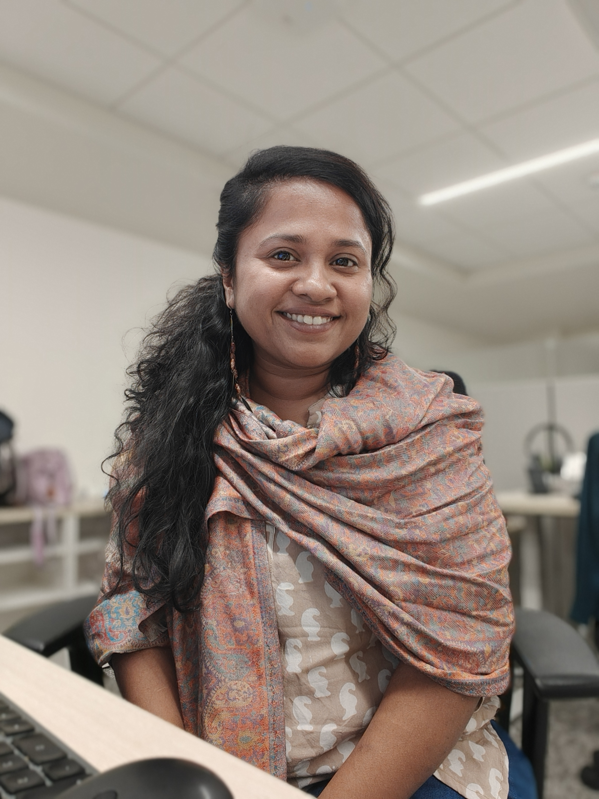
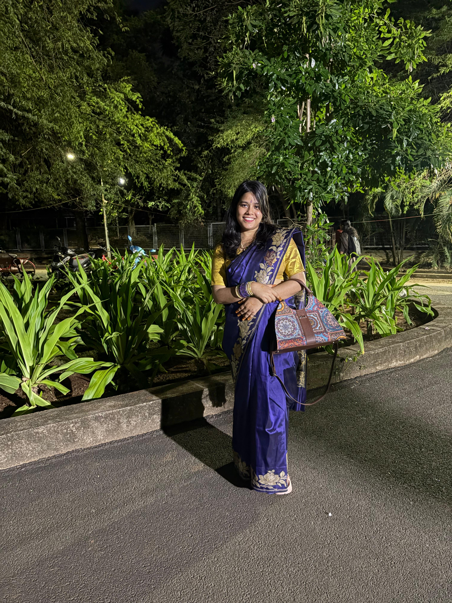
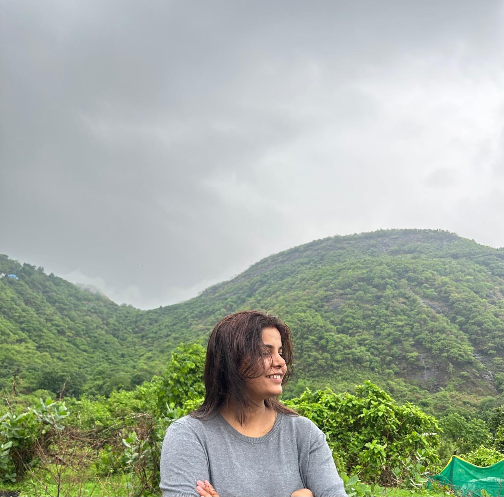
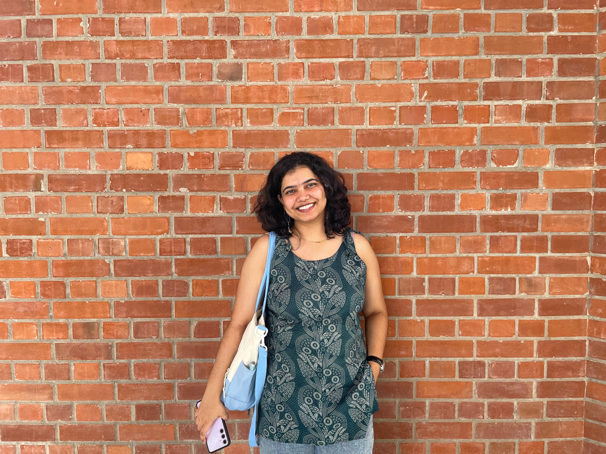
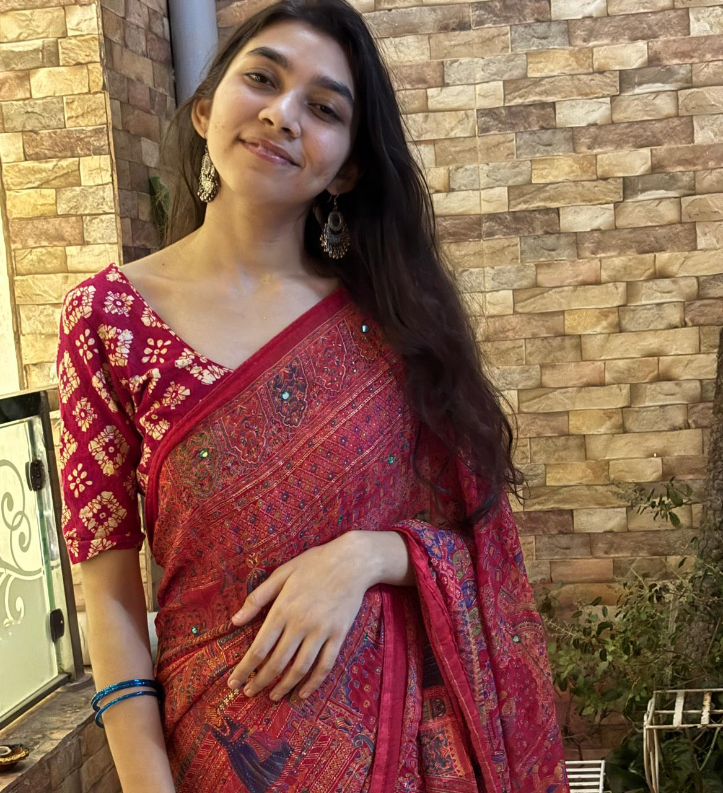
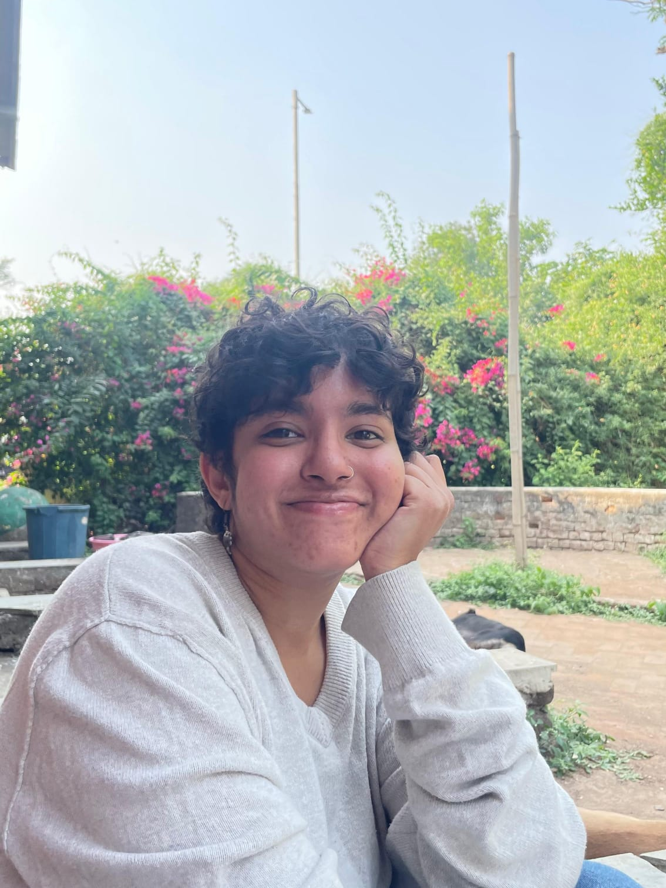
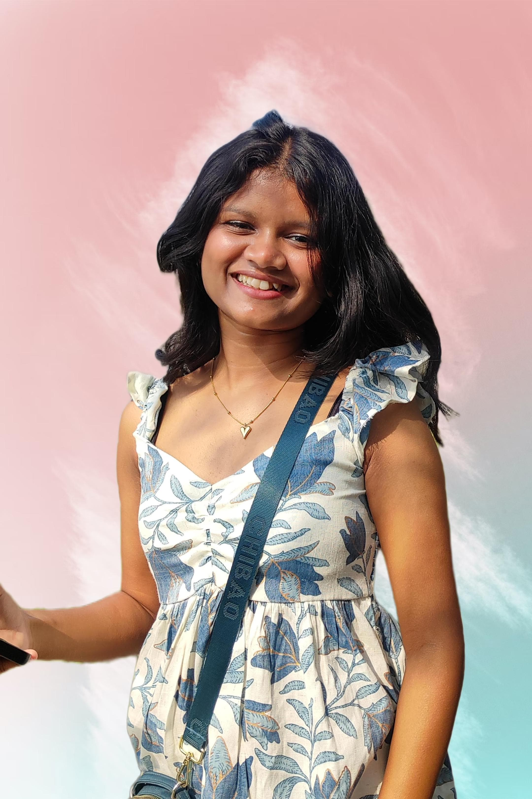
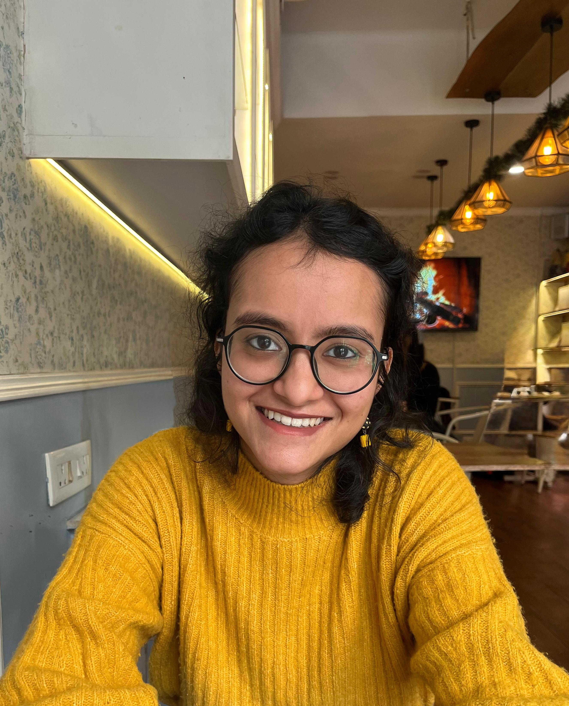
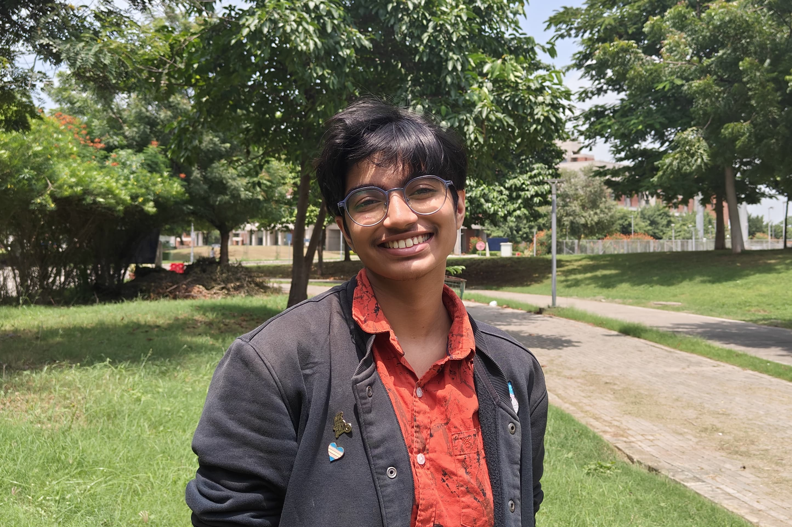

◌
Development of functional vision
We examine how crowding, attention, temporal encoding, and early visual representation emerge and interact through childhood.
We study how visual mechanisms develop during early childhood and how those trajectories shape learning, reading, and broader neurodevelopment.
Our work connects controlled psychophysics with large-scale school studies so that foundational vision science can inform more equitable screening, assessment, and intervention tools.
The lab welcomes thoughtful, cross-disciplinary researchers interested in children's development, equitable science, and translational impact.
The site now presents the lab as a contemporary research studio, with more breathing room, stronger hierarchy, and clearer thematic grouping.
We examine how crowding, attention, temporal encoding, and early visual representation emerge and interact through childhood.
We investigate how visual encoding and neurodevelopment relate to reading outcomes and learning trajectories.
We design accessible, gamified assessments that can scale across languages, settings, and socioeconomic contexts.
The lab's scientific aim is to connect rigorous basic vision research with real-world understanding of developmental diversity and early support needs.
The original tile navigation is kept, but restyled with better spacing, shadows, and clearer visual affordance.
Great science grows through collaboration, complementary expertise, and thoughtful mentorship.
Great science comes from diverse perspectives. Meet everyone who makes the lab's work possible.

Dr. Ramamurthy is a developmental cognitive neuroscientist and vision scientist interested in understanding how children see, learn, and develop. Her research combines optometry, psychophysics, and cognitive neuroscience to explore how functional vision influences cognitive skills such as reading, particularly in neurodiverse populations.
Outside the lab, she's happiest creating—whether that's trying out a new recipe, exploring hidden trails, or putting thoughts into words. She enjoys discovering local experiences, believes every journey should include good food, and considers vada pav, chai, and monsoon rain the perfect way to end any day.

Chirantana is a PhD student in IIT Madras, She is investigating how neurodiverse adults learn language, adapt to unfamiliar tasks, and develop unique cognitive strategies. Whether it's language, people, or places, she's always curious about how we adapt, learn, and make sense of the world around us.
🎨 Crafting creative things | 🌮 Hunting for local food gems | 🌍 Always planning the next adventure

Recovering software engineer, current AI/ML researcher in healthcare. Somewhere between writing code, wrangling clinical datasets, and building research platforms, I've developed a habit of asking, "Can we automate this?" and then spending the next week actually doing it.
🧶 Knitting | 🎧 Random playlists | 🌥️ Zoning out (debugging in my head) | 💬 Certified yapper

Finding patterns everywhere—from psychophysics data and visual perception to novels, city cafés, and half-finished canvases. If there's a puzzle to solve or a story to uncover, I'm probably already intrigued.
🎨 Painting | ✏️ Sketching | 📖 Reading | ☕ Café hopping | 🖋️ Writing poetry

Exploring how neurodevelopmental assessments and interventions can be made more engaging, accessible, and impactful. She's excited to bridge theory and practice while contributing to research that can make a real difference in people's lives.
🏸 Badminton | 🎵 Indie folk music

Following the breadcrumbs of language through the human mind. From syntax and sentence processing to the ways language interacts with memory and attention, Kairavi is interested in understanding how we make sense of the world—one sentence at a time.
☕ Coffee enthusiast | 🎶 Live music appreciator | 🧬 Evolution thought-experiment enjoyer

Exploring attention, perception, and visual search to understand what makes certain things stand out and how our brains decide what's worth noticing. The irony isn't lost on her—she studies attention while occasionally getting distracted by her own thoughts. Sometimes, the best research questions begin with the most unexpected bathroom epiphanies.
💭 Professional daydreamer | 📖 Curiosity-driven rabbit-hole explorer | 👀 Observing everything (except sometimes the obvious)

Exploring how cognitive abilities develop as children grow, especially the wonderfully elusive phenomenon of attention. Equal parts developmental cognition and existential debates about what attention even is, she's always up for asking big questions—preferably with a good novel or a violin nearby.
📖 Fiction enthusiast | 🎻 Amateur violinist | 🎶 Collecting favorite tunes one note at a time

Exploring how neurodiverse individuals make decisions and process information during cognitive tasks. By combining behavioral experiments with drift diffusion modeling, Atlas looks beyond accuracy scores to understand the hidden cognitive processes driving performance in visual perception and attention tasks.
🖌️ Trying out different art mediums | ✏️ Sketching ideas onto paper | 🧁 Baking with a side of recipe experimentation
Sections can foreground crowding, attention, temporal processing, and early visual representation as distinct but connected themes.
Large-scale school-based work can be highlighted with stronger evidence blocks and methodological summaries.
Screening tools, intervention logic, and applied collaborations can sit in a dedicated impact area.
Peer-reviewed publications spanning vision science, reading development, and neurodiversity.
Mahalakshmi Ramamurthy, Klint Kanopka, Julian M Siebert, Lucy Yan, Carrie Townley-Flores, Mónica Zegers, Francesca Pei, Phaedra Bell, Hugh Catts, Maria Luisa Gorno-Tempini, Jason Yeatman
View publication →Mahalakshmi Ramamurthy, Alex L White, Jason D Yeatman
View publication →Mahalakshmi Ramamurthy, Klint Kanopka, Adam Richie-Halford, Benjamin Domingue, Francesca Pei, Phaedra Bell, Lucy Yan, Andrea Hartsough, Gorno Luisa, Jason Yeatman
View publication →JD Yeatman, C Townley-Flores, K Wentzlof, WA Ma, JM Siebert, M Fuentes-Jimenez, A Saavedra, TS Murray, K Bhat, M Ramamurthy
View publication →Mahalakshmi Ramamurthy, Alex White, Patrick Donnelly, Kenny An Tang, Clementine Chou, Grace Adebogun, Jason Yeatman
View publication →Mahalakshmi Ramamurthy, Alex L White, Clementine Chou, Jason D Yeatman
View publication →Mahalakshmi Ramamurthy, Alex White, Clementine Chou, Jason Yeatman
View publication →Teaching and mentorship are central to how the lab works. Below is Maha's teaching philosophy and journey, shaped by work across India, Canada and the US.
aha's teaching began right after her optometry degree in India, teaching neuroanatomy and physiology to pre-med and optometry students. At the University of Waterloo she tutored physiological optics and colour perception, and built a set of demonstrations to help students grasp concepts in perception and optics. The through-line across these experiences has been designing active learning that reaches students from very different starting points.
Teaching full undergraduate courses at UMass Boston, where many students were first-generation or returning after a break, required rebuilding the syllabus around example-building and demonstrations. Assignments asked students to generate their own examples for each concept; pre- and post-class quizzes surfaced where reinforcement was needed; informal conversations before class served as ongoing check-ins. This kept the curriculum responsive to where each student actually was
These experiences taught her to read a classroom's starting point and reshape teaching accordingly. She carries the same approach into graduate mentoring and into the teaching she does at IIT Gandhinagar today.
The original accordion idea is preserved, but rebuilt with softer surfaces, clearer states, and more premium interaction styling.
Programs, links, community initiatives, and writing can all be placed into cleaner linked modules rather than dense inline blocks.
We welcome researchers at all career stages who share our passion for understanding functional vision, neurodevelopment, and learning.
We welcome researchers at all career stages who share our passion for understanding functional vision, neurodevelopment, and learning.
Deadline: August 20, 2026
We are seeking a highly motivated researcher to investigate the relationship between visual processing and reading development in neurodiverse populations.
Last Date: 20 August | Duration: 2 Years
We are looking for a postdoctoral researcher with expertise in machine learning and computer vision to develop novel computational models of visual perception.
Undergraduate summer internship opportunity focused on designing and implementing behavioral experiments in visual psychophysics.
We welcome volunteers from relevant backgrounds, and responsibilities will be assigned based on each applicant’s qualifications, interests, and prior experience.
Prospective PhD students should apply through the university's graduate program. We encourage you to reach out before applying to discuss potential research directions.
Current PhD openings: 2 positions available for Fall 2026
We welcome applications from postdoctoral researchers with relevant experience. Please send your CV, research statement, and contact information for references.
Current Postdoc openings: 1 position available (immediate start)
Short-term research opportunities for undergraduates and early graduate students. Applications are typically reviewed in early spring.
Current Intern openings: 3 positions available for Summer 2026
For students interested in completing their bachelor's or master's thesis with the lab, please reach out with your research interests and timeline.
Current thesis openings: Accepting inquiries year-round
📧 Ready to apply? Contact us at functionalvisionlab@example.com with your CV and a brief statement of interest.
Your participation helps us understand how visual mechanisms develop and how they relate to learning and reading outcomes.
Your participation helps us understand how visual mechanisms develop and how they relate to learning and reading outcomes.
We conduct studies with children and adults across different age groups and neurodevelopmental backgrounds. All participants must meet specific inclusion criteria for each study.
Studies typically involve visual tasks, reading assessments, and computer-based activities. Sessions are designed to be engaging and age-appropriate.
Most studies require 1-2 sessions lasting approximately 1-2 hours. Some studies may involve multiple sessions spread over weeks or months.
Studies are conducted at our lab facilities. We also conduct remote studies that can be completed from home.
🤝 Interested in participating? Sign up to be notified about upcoming studies or learn more about our current research opportunities.
Get in touch →What we value and how we work together as a research community.
Our lab culture is built on collaboration, curiosity, and commitment to rigorous, equitable science.
Last updated: July 2026
The Functional Vision Lab exists to understand how the visual mechanisms underlying learning and cognition develop in early childhood, and to turn that understanding into screening and intervention tools that work for the full diversity of children — across languages, scripts, and socioeconomic contexts. India gives us a rare scientific opportunity: a vast, multilingual population with enormous variation in educational environments. We take that opportunity seriously, and we take the responsibility that comes with it — to children, to schools, and to each other — just as seriously.
Beyond the science, my goal is to train the next generation of rigorous, ethical, and independent researchers. Whatever your role in the lab — Master's student, RA, volunteer, PhD student, or postdoc — you are here to learn, contribute, and grow, and I am here to support that.
A few things I care about deeply, and hope you will too:
— Maha
To do good science together, we need clear expectations for how we treat each other. These are non-negotiable.
Essential policies
The lab does not tolerate harassment, discrimination, or misconduct of any kind — this includes conduct related to race, caste, religion, gender identity or expression, sexual orientation, disability, region, or language. This applies to every member of the lab regardless of role, seniority, or how long they've been here.
Ground rules
Confidentiality
Personal matters shared with the lab or with me — physical or mental health, financial difficulty, family situations, academic struggles — are confidential unless you explicitly say otherwise. Don't share someone else's sensitive information without their consent, and be mindful of power dynamics when you do ask for that consent.
One exception: some situations involving the safety of minors (see Section 4) create reporting obligations under Indian law that override confidentiality. If this ever applies, I will tell you directly rather than act on it silently.
Shared spaces
Lab members typically share office/lab space in the Cognitive and Brain Sciences area. A few basics that make shared space work:
Language and communication norms
We work across Hindi, English, Gujarati, and often other Indian languages, especially when running studies in schools. Use whatever language helps a conversation go well — English for lab meetings and written records by default, but don't let language be a barrier to being understood or understanding others. If you're more comfortable raising something in Hindi or Gujarati, do that.
This section doesn't have a parallel in most lab-expectations documents, but it's central to how we work. Much of our research involves children, in schools and in the lab, and this comes with specific responsibilities.
These are meant as sensible starting defaults. Numbers and specifics will be confirmed and updated as the lab grows — ask me if anything below seems off or unclear.
a. Principal Investigator
My commitment to you:
b. Everyone
c. Postdoctoral Researchers and Research Associates
You're expected to work with significant independence — designing studies, leading analyses, and increasingly, co-mentoring students. I'll loop you into grant writing, collaborations, and career-planning conversations as your interests develop. In turn, I'll look to you as a source of technical and mentorship leadership in the lab.
d. PhD Students
You are training to become an independent researcher with your own line of work. Expect deep involvement in study design, analysis, and writing on your primary project, along with contributions to shared lab infrastructure (protocols, pipelines, field logistics). Committee meetings, conference presentations, and eventually a job search are natural checkpoints for feedback — bring them to me early.
e. Master's Students
Your thesis or project work should give you a genuine, hands-on experience of the full research cycle — from question to data to write-up — scoped to fit your timeline. We'll agree on a clear, well-defined project early on, with milestones that work backward from your submission deadline. Ask early if the scope needs adjusting; it's much easier to resize a project in month two than month ten.
f. Research Assistants (RAs)
Whether you're full-time project staff or working alongside coursework, your role centres on specific, well-defined responsibilities — data collection, coding, participant coordination, or analysis pipelines — agreed on when you join. You'll get direct supervision and training on any protocol before you run it independently. Long-term, engaged RAs (particularly on longitudinal projects) are recognised for their contribution through co-authorship where warranted (see Section 8) or acknowledgement.
g. Volunteers and Short-Term Interns (including summer interns)
Welcome — and thank you for contributing your time. Expect a scoped, supervised task or mini-project appropriate to the time you have (weeks to a summer), clear guidance from me or an assigned mentor, and honest feedback on your work. Because your involvement is often brief, authorship is uncommon but not ruled out for exceptional, sustained contributions (see Section 8); acknowledgement in publications and a reference/LOR for future applications are the norm. If you're a minor volunteer or intern (e.g., a school student), additional supervision and parental consent apply.
Mentorship goes both ways. Mentors owe their mentees clear expectations, regular check-ins, and honest, constructive feedback. Mentees owe their mentors clarity about what they need and realistic effort on agreed tasks.
Taking on a mentee (often an RA, Master's student, or intern) is optional, and it's a real commitment — regular check-ins and the bandwidth to actually guide someone through their project. If your bandwidth changes mid-project, tell your mentee and me as early as possible so we can find a path forward, rather than letting someone drift unsupported.
For prospective volunteers, interns, or RAs reaching out to join the lab: I read every inquiry, and where I don't have capacity myself, I'll try to connect you with someone in the lab who does.
Your experience in this lab matters, and problems — interpersonal, academic, or otherwise — should have somewhere to go.
Lab level.
Start with me if you can. If the issue involves me, or you'd rather not raise it with me directly, talk to a senior lab member.
Institute level.
Wellbeing.
Please look after yourself, and reach out for support early rather than waiting until things feel unmanageable. IIT Gandhinagar's counselling and wellness services are available to all students and staff — ask me or Student Affairs for current contact details if you need them.
This document is a living one and will be revised as the lab grows. If something here doesn't match your experience, or you think it should say something it doesn't, tell me — that's exactly the kind of feedback that makes it better.
This section can become more magazine-like, with publication cards, external links, and community work modules that are easier to scan.
Medium posts, field notes, and essays can be shown as publication cards with consistent metadata and stronger typography.
Community work deserves its own visual hierarchy instead of being tucked into small inline panels.
The contact page is reworked into a stronger two-column layout with clearer reasons to reach out and a more polished form.